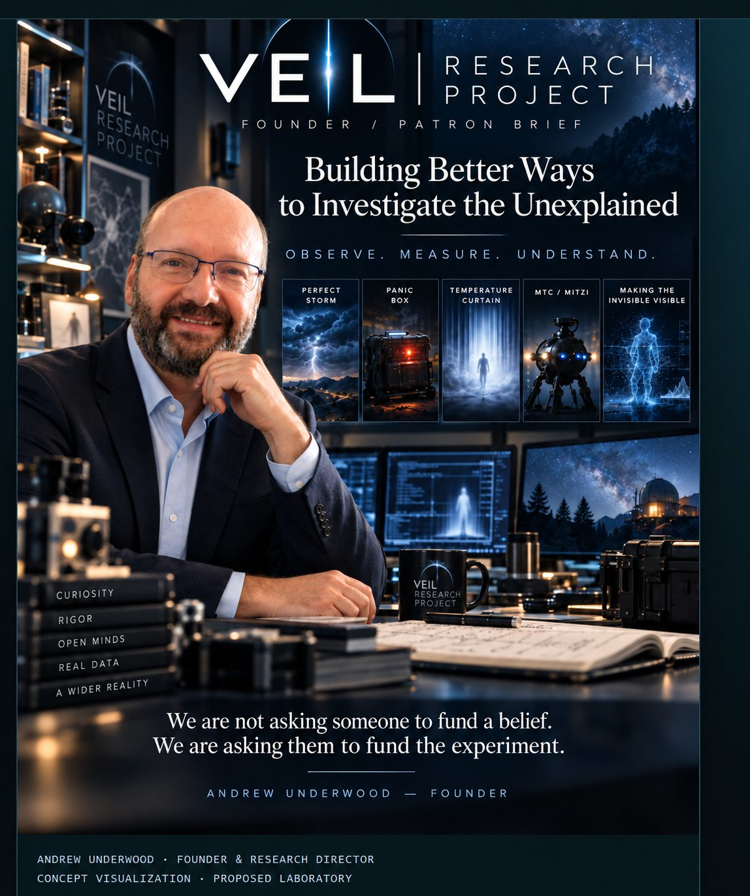
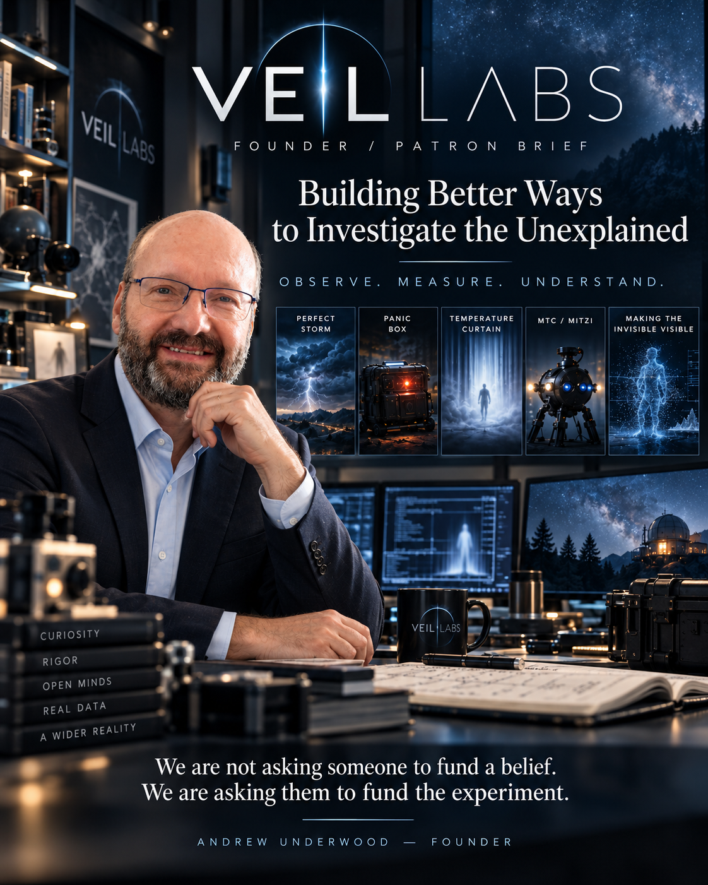
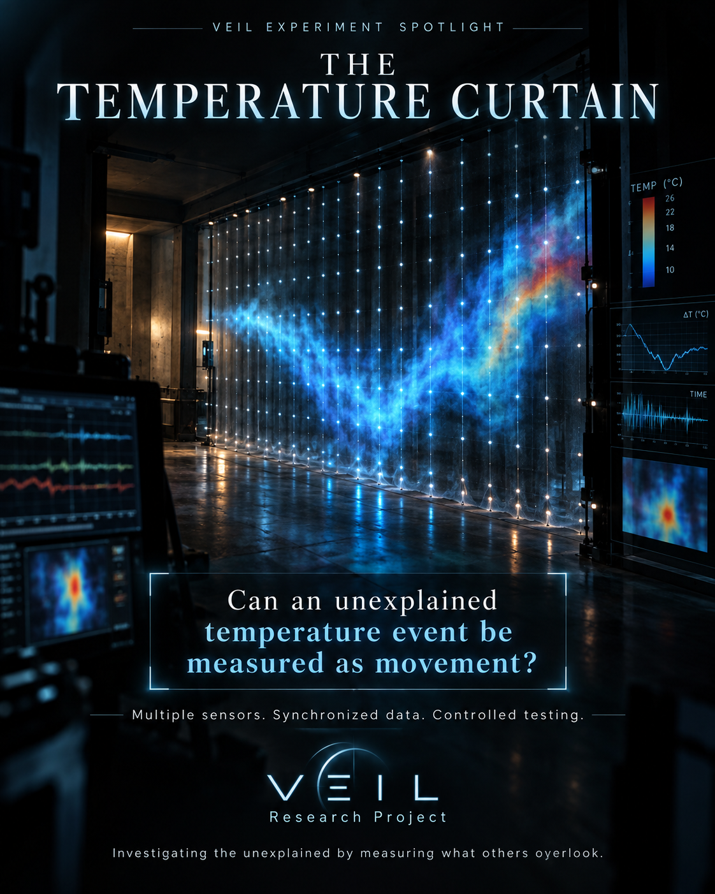
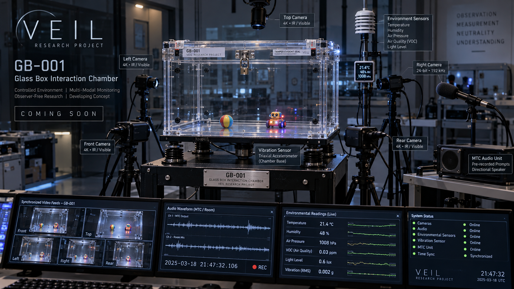

The question
What if we stopped asking whether to believe—and started asking what we can measure?
An independent research initiative developing controlled experiments, synchronized instrumentation and evidence-first field systems to investigate reported anomalous phenomena.
Public discussion is hosted on GitHub; a free GitHub account is needed to comment.


Founder & Research Director · VEIL Research Project
Andrew Byron Underwood is the founder and research director of VEIL Research Project, an emerging independent initiative based in the Erie, Pennsylvania region. Drawing on his past experience investigating reported paranormal activity and his professional background in industrial manufacturing, estimating, and technical sourcing, Andrew is working to bring disciplined engineering questions to a field often dominated by personal interpretation.
His goal is to develop interoperable experimental systems that preserve raw evidence, synchronize measurements, establish reliable baselines, and actively test ordinary explanations before drawing conclusions. VEIL's current work includes proposed optical, thermal, electromagnetic, and observer-free audio experiments, alongside portable monitoring and controlled-chamber concepts.
Andrew envisions a dedicated research center where engineers, scientists, skeptical reviewers, and field investigators can collaborate on repeatable testing. The center and its instruments remain proposals in development, not a funded or physically validated laboratory.
Andrew originated the project's vision and experimental directions, with AI assistance in refining proposals, documentation, and virtual test plans. He welcomes rigorous questions and independent review.
What if we stopped asking whether to believe—and started asking what we can measure?
Establish baseline conditions, preserve raw data and deliberately challenge unusual results with conventional explanations. The aim is repeatable research—not a claim that paranormal phenomena have been proven.
Andrew Underwood brings paranormal investigation experience and a manufacturing, estimating and technical sourcing background to the development of measurement-driven research concepts.
ChatGPT has substantially assisted with proposal drafting, technical documentation and research planning. Proposed concepts and simulations do not constitute independent engineering review or experimental validation.
On October 8, 2026, VEIL submitted NSF SBIR/STTR Project Pitch 00128532 under Scientific Instrumentation. Submission is not an award or endorsement.
The first public website now introduces six connected experimental concepts, their planned controls and where the research stands. VEIL submitted an NSF SBIR/STTR Project Pitch on October 8, 2026; no funding decision has been announced.
Read the development updates →VEIL is designing a voice-first, conversational AI interface for its proposed research center so scientists, engineers and investigators can work hands-free, speak observations and questions naturally, and receive spoken responses without constant manual data entry.
Authorized researchers would verbally request readings, initiate supported workflows and record observations as attributed, timestamped experiment notes linked to synchronized sensor data.
The proposed interface would bring together Temperature Curtain, Perfect Storm, ECHO, MTC, Panic Box and future instruments through shared experiment context and data retrieval.
Critical equipment actions require authorization, confirmation and independent safety interlocks. Silent and observer-free recording modes protect sensitive experiments, including MTC/EVP testing, from voice contamination.
Development status: mandatory architectural requirement and proposed capability. A laboratory-wide voice AI interface has not yet been built, deployed or validated.
Observer-free environmental-memory research, now including E-02: apply a controlled EM field, switch it completely off, and compare delayed observations against blinded sham trials.
OPEN EXPERIMENT →
A portable experimental chamber and deployable full-room six-plane optical grid are proposed for detecting and reconstructing changes inside a monitored space.
OPEN EXPERIMENT →
A spatial grid of thermal sensors intended to investigate movement, shapes, thermal persistence and environmental interactions.
OPEN EXPERIMENT →
An adjustable multi-axis electromagnetic-field research platform for repeatable tests of field strength, orientation, phase and environmental response.
OPEN EXPERIMENT →
MTC is designed primarily to test whether EVP-like recorded results occur when NO human observer is present in the monitored test area during acquisition.
OPEN EXPERIMENT →
A portable monitoring system intended to continuously capture synchronized camera, microphone and environmental data before and after a reported event.
OPEN EXPERIMENT →
A proposed transparent, raised, isolated chamber designed to support instrumented sub-experiments under repeatable, documented conditions.
OPEN EXPERIMENT →VEIL’s planned instruments share a common emphasis: synchronized measurement, rigorous controls, raw evidence preservation and transparent review.
Contact · Collaborate · Support →VEIL welcomes thoughtful criticism as much as curiosity. Tell us what we should measure, which ordinary causes we need to eliminate, and how to make the experiments more rigorous.
Comments open in GitHub and require a free account. Please do not post private information.